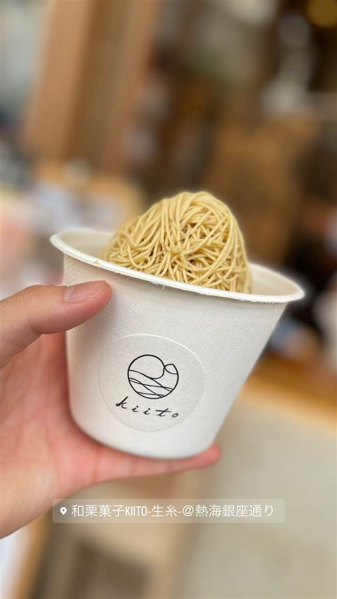

スイーツ · 和菓子 · 熱海銀座
和栗菓子kiito-生糸-
熊本産和栗を目の前で1mmに絞るモンブラン
和栗菓子KIITO-生糸-@熱海銀座通り
和栗菓子kiito-生糸-は、創業1806年の老舗旅館・古屋旅館が京都のモンブラン専門店「和栗専門 紗織」と共同プロデュースし、2021年に熱海銀座通りにオープンした店。熊本県産の和栗を100％使い、注文ごとに目の前で1mmの細さに絞るモンブランが看板商品で、甘さを抑えた大人向けの味わいが特徴。
TRIVIA
豆知識
- 創業1806年の老舗旅館「古屋旅館」が運営元で、京都の専門店とのコラボから生まれた
- 店名「生糸（きいと）」はモンブランの繊細な絞り目が生糸のようであることに由来すると考えられる
- 一般的なモンブランより甘さを抑えた「引き算」の味づくりをしている
REVIEWS
世間の評判
3.54食べログ
目の前で絞る和栗モンブラン
- 目の前で細く絞る和栗モンブランをアートのようだと評価する声が多い
- 落ち着いた高級感のある洗練された店内の雰囲気を評価する人が多い
- モンブランの価格の高さや現金払いのみである点を不便に感じる声もある
- 甘さが強すぎると感じる人もいれば中身がメレンゲっぽいと指摘する声もある
食べログ 口コミ496件
| 創業 | 2021年3月2日オープン |
|---|---|
| 系譜 | 京都の人気モンブラン専門店「和栗専門 紗織」と、創業1806年の熱海の老舗旅館「古屋旅館」が共同プロデュース |
| 看板 | モンブラン（和栗を目の前で1mmの細さの錦糸状に絞って提供） |
| こだわり | 熊本県上益城郡産の厳選された純国産和栗を100％使用し、注文後に目の前で細さ1mmの錦糸状に絞る。栗本来の風味を味わえるよう、甘みを抑えた「引き算」の考え方で作られている。 |
| どこから | 日帰りで行ける遠さ |
| 営業時間 | 月〜日 10:00-17:00 |
| 予算 | 昼 ¥2,000～¥2,999 |
| 定休日 | 不定休 |
| 予約 | 予約可 |
| 場所 | 来宮駅 静岡県熱海市銀座町8-9 |
| メモ | 熱海駅から徒歩約15分、観光客で賑わう熱海銀座商店街のアーケード内に位置する。 |
食べたもの：モンブラン
NEARBY
近い店・同じ系統の店
-
 和菓子 恵比寿
たいやき ひいらぎ
1個焼くのに30分かける東京五大たい焼きの一つ
昼 ～¥999 夜 ～¥999
和菓子 恵比寿
たいやき ひいらぎ
1個焼くのに30分かける東京五大たい焼きの一つ
昼 ～¥999 夜 ～¥999
-
 和菓子 麻布十番
浪花家総本店
たい焼き発祥ともいわれ、100年以上一丁焼きを守り続ける最古参の店
和菓子 麻布十番
浪花家総本店
たい焼き発祥ともいわれ、100年以上一丁焼きを守り続ける最古参の店
-
 和菓子 箱根湯本駅
菊川商店
製造終了した希少な専用焼き機を2台所有し焼きたてまんじゅうを提供
昼 ～¥999 夜 ～¥999
和菓子 箱根湯本駅
菊川商店
製造終了した希少な専用焼き機を2台所有し焼きたてまんじゅうを提供
昼 ～¥999 夜 ～¥999
-
 和菓子 許田
琉球銘菓 三矢本舗 道の駅許田店
3人兄弟の屋号を掲げるサーターアンダギー専門店
和菓子 許田
琉球銘菓 三矢本舗 道の駅許田店
3人兄弟の屋号を掲げるサーターアンダギー専門店
-
 和菓子 西鉄太宰府駅
太宰府参道 天山 太宰府本店
太宰府政庁跡出土の鬼瓦をかたどった最中種を使う鬼瓦最中が看板
昼 ～¥999
和菓子 西鉄太宰府駅
太宰府参道 天山 太宰府本店
太宰府政庁跡出土の鬼瓦をかたどった最中種を使う鬼瓦最中が看板
昼 ～¥999
-
 和菓子 大山ケーブル駅
茶寮 石尊(推定)
大山阿夫利神社境内の御神水を使い標高700mの絶景テラスで味わう
昼 ¥1,000～¥1,999 夜 ¥1,000～¥1,999
和菓子 大山ケーブル駅
茶寮 石尊(推定)
大山阿夫利神社境内の御神水を使い標高700mの絶景テラスで味わう
昼 ¥1,000～¥1,999 夜 ¥1,000～¥1,999